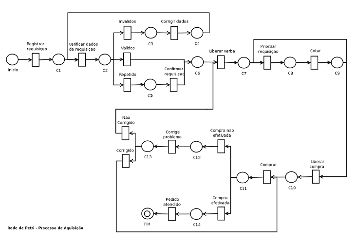

Ciclo Aquisição de Item de Acervo
1. Introdução
Este
módulo é composto por um fluxo de processos (figura 1) que representa a
aquisição de um item acervo para a biblioteca.
Esse fluxograma tem sentido único,
e apresenta os estados (processos) pelos quais passa um item acervo,
desde quando é solicitado até o momento em que é colocado na estante da
Biblioteca. Cada processo pode conter mais de uma instância.
Figura 1 – Fluxo de processos para a aquisição de um item de acervo
2. Descrição Detalhada do Fluxo
Os Processos
A
tabela 17 descreve cada um dos subprocessos do fluxo. Com o intuito de
facilitar a leitura, optou-se por designar os setores de AQUISIÇÃO e DEPARTAMENTO TÉCNICO pelos nomes de seus responsáveis: Eunice e Maria Lúcia, respectivamente.
Na coluna de SUBPROCESSO,
há, para cada subprocesso, uma lista dos dados até então obtidos. Estes
subprocessos, posteriormente, serão divididos em dois grandes
processos: Pedido e Compra.
| Ordem | Subprocesso | Descrição |
| 1 | SOLICITAÇÃO: título autor ano número da edição ISBN e/ou ISSN quem/quando solicitou |
Qualquer aluno ou professor pode solicitar uma obra. O solicitante deve fornecer , para a Eunice, os seguintes dados mínimos: título e autor. A partir desses dados, a Eunice procura a edição, o ano e o ISBN e/ou o ISSN da obra. |
| 2 | DEPARTAMENTALIZAÇÃO: título autor ano número da edição ISBN e/ou ISSN quem/quando solicitou departamento |
Cada
departamento possui um orçamento para aquisição de itens novos. Nesse
processo, é preciso definir em qual lista a obra solicitada deve estar. É um processo nem sempre trivial, já que muitas obras abrangem assuntos relacionados a mais de um departamento. No geral, como são os próprios professores que solicitam os livros, a obra é incluída na lista do departamento do respectivo professor-solicitante. Caso haja dúvidas em relação à lista, deve ser feita uma consulta ao Coordenador. |
| 3 | ORDENAÇÃO: título autor ano número da edição ISBN e/ou ISSN quem/quando solicitou departamento ordem quem estabeleceu ordem quando a ordem foi estabelecida |
Cada departamento deve organizar sua lista de solicitações, definindo quais itens devem ser comprados primeiro. Como a lista de solicitações pode ser extensa, não é necessário ordenar todos os itens. Numa lista de 200 solicitações, por exemplo, podem ser ordenados apenas os 10 primeiros. |
| 4 | ORÇAMENTO: título autor ano número da edição ISBN e/ou ISSN departamento ordem quem estabeleceu ordem quando a ordem foi estabelecida preços |
A partir da lista ordenada, a Eunice faz uma consulta de preços para cada uma das obras da lista. Alguns itens podem não estar mais disponíveis no mercado. |
| 5 | PRIORIZAÇÃO: título autor ano número da edição ISBN e/ou ISSN quem/quando solicitou departamento ordem quem estabeleceu ordem quando a ordem foi estabelecida preços prioridade motivos da reordenação (quando houver) |
Dados os preços, é preciso reavaliar a lista e priorizar a compra dos itens. Caso ocorra uma reordenação, deve-se guardar os motivos da troca. Possíveis motivos: caro demais, não disponível no mercado. |
| 6 | COMPRA: título autor ano número da edição ISBN e/ou ISSN quem/quando solicitou departamento ordem quem estabeleceu ordem quando a ordem foi estabelecida preços prioridade motivos da reordenação (quando houver) motivos para não efetivação da compra (quando houver) |
Definida
a lista, a efetivação da compra fica a cargo do Setor de Compras. Este
também faz uma outra consulta de preços, levando também em conta o
histórico de seus fornecedores. No momento da compra, pode ocorrer "falta de estoque" do item solicitado. Este evento deve constar no histórico do item. |
| 7 | PROCESSAMENTO TÉCNICO: título autor ano número da edição ISBN e/ou ISSN quem/quando solicitou departamento ordem quem estabeleceu ordem quando a ordem foi estabelecida preços prioridade motivos da reordenação (quando houver) assunto tombo número de chamada |
O item de acervo chega à Biblioteca. A Eunice deve acusar o recebimento ao Setor de Compras. Cada item adquirido deve ser tombado como patrimônio da USP. A classificação é feita pela Maria Lúcia. Assim que o item chega, a Maria Lúcia envia um email para o professor solicitante, pedindo para definir a qual (quais) assuntos ele gostaria que o item estivesse associado. Caso o professor solicitante não responda a este email, a Maria Lúcia pede ao Coordenador que defina um ou mais assuntos para aquele item. Definido o assunto, o número de chamada é acrescentado ao item. |
| 7 | ENTRADA | O item é colocado na estante e disponibilizado para consulta e/ou empréstimo. O item fica na estante de livros novos por 15 dias. Após este período, o item é colocado na estante de acordo com seu número de chamada. |
Outros detalhes:
- No geral, a compra é feita uma vez por ano (logo no início), assim que é definida uma verba para a aquisição.
- Processo de aquisição de um item é demorado, e processos de compra distintos podem ocorrem separadamente.
- Livros solicitados por bolsistas: caso especial em que um bolsista pede à biblioteca que compre determinada obra com dinheiro fornecido por ele.
- Doações:
a) O doador traz um livro. Neste momento, a Eunice pergunta se, caso não haja interesse da biblioteca pela obra, o doador autoriza repassar o item para outra instituitção.
b) O coordenador avalia o item. Caso haja interesse, a Eunice deve acusar o recebimento no setor de Compras e entregar o item para o Processamento Técnico.
c) Se não houver interesse pelo item, e caso o doador tenha autorizado a repassagem, o item é encaminhado para outra biblioteca/instituição. - Fichas-papel (do Arquivo): É importante salientar que as fichas-papel, que podem ser consultadas nos Arquivos, são organizadas de modo a facilitar a procura por algum item. Nessas fichas, um item pode estar classificado como "ÁLGEGRA - Álgebra Linear - Exercícios" e também como "Exercícios - Álgebra Linear". Essa ordem serve apenas para facilitar a consulta nos Arquivos. Nos registros eletrônicos, cada obra está associada aos assuntos definidos no Processamento Técnico, e não aos modos distintos de se listar tais assuntos.
O fluxo da figura 1 foi quebrado em dois processos - Pedido e Compra – que aparecem mais detalhados nas figuras 2 e 3; a descrição destes processos, já validada pelos usuários do sistema da biblioteca através da aplicação em Naked Objects, se encontra na seqüência.
Descrição do Fluxo de um Pedido
- O processo se inicia quando uma requisição é feita por algum professor ou aluno. Os dados dessa requisição são verificados e cadastrados no sistema. A partir desse ponto, a requisição se transforma em um Pedido.
- Se os dados não forem consistentes ou já existir um item igual no acervo, o pedido retorna ao representante do departamento relacionado e aguarda uma confirmação ou cancelamento.
- Se os dados estiverem corretos, esse pedido permanecerá numa lista de pedidos até ser tomada uma decisão de compra. Depois disso, ocorre a fase de priorização dos itens feita pelos representantes de cada departamento, onde os itens são ordenados de acordo com a sua importância.
- Com a lista priorizada, é feita uma consulta de preços. O resultado da consulta é enviado a cada departamento, que eventualmente poderá modificar a prioridade dos itens.
- De acordo com o orçamento, os n primeiros itens vão para
a lista de compras e os demais retornam à lista de pedidos. Uma vez
solicitada a compra, uma das seguintes situações pode ocorrer:
- comprado
- problemático
Figura 2 – Fluxo detalhado do processo de pedido de item de acervo
Figura 3 – Fluxo detalhado do processo de compra de item de acervo
Consistências
Item de Acervo
- Fascículo - título e número;
- Livro e Série - título e autor;
- Multimídia - título e tipo de mídia;
- Tese - título e autor.
Requisitante
- nome;
- e-mail;
- título.
Departamento
- nome;
- sigla.
Orçamento
- preço;
- fornecedor.
Fornecedor
- razão social;
- nome fantasia.
3. Modelagem do Fluxo
Neste ponto, há uma lista de itens de acervo aguardando liberação. Os itens são organizados em ordem de prioridade e inicia-se o processo de cotação. Muitas vezes, a cotação necessita que a lista volte para o processo de priorização.
Após a cotação, o pedido aguarda liberação da compra. Uma vez liberada, o responsável pela compra faz a encomenda dos itens aos fornecedores e se não houver nenhum problema com o pedido, a compra é efetivada.
É importante dizer que a qualquer momento durante a execução do pedido de compra, este pode ser cancelado.
A figura 4 mostra a representação em rede de Petri:

Figura 5 – Modelo em rede de Petri do fluxo de Aquisição
Para a modelagem do Módulo Aquisição em Álgebra de Processos, foi necessário particionar o processo principal em 5 subprocessos para que fosse possível representar os loops existentes no modelo em rede de Petri.
É importante dizer que a cada ação do processo de aquisição, este pode ser cancelado (isto é melhor visualizado nos diagramas apresentados abaixo). Para isto utilizamos o padrão Cancel Case que cancela o processo. A seguir estão representados os diagramas referentes a cada subprocesso.
Processo1 - Registro de requisição
- Item Acervo com título e número no caso de Fascículo, título e autor no caso de livro Série, título e autor no caso de tese e título e tipo de mídia no caso de multimídia.
- Requisitante com nome, email e tipo.
- Departamento com nome e sigla.
Figura 6 – Modelo do Processo1 usando workflow patterns e a expressão correspondente em álgebra de processos
Processo2 - Validação de registro de requisição
Estas informações podem válidas, inválidas ou repetidas. No caso de serem válidas, seguem para o processo 3.
Já se forem inválidas, isto é, dados inconsistentes, devem ser corrigidas antes de seguirem para o processo 3. Aqui encontramos o padrão Arbitrary Cycles, pois após serem corrigidas voltam ao início do processo 2 para a validação.
E se forem repetidas, isto é, já existe um item de acervo com esta descrição na biblioteca, é necessário que uma pessoa autorizada comfirme a compra deste item.
Figura 7 – Modelo do Processo2 usando workflow patterns e a expressão correspondente em álgebra de processos
Processo3 - Liberação de verba
Uma vez que o processo 4 foi executado com sucesso, o pedido aguarda liberação de compra. Caso seja liberado, segue para o processo 5 (Compra). Se não for liberado, o pedido volta para o início deste processo para que o problema seja resolvido.

Figura 8 – Modelo do Processo3 usando workflow patterns e a expressão correspondente em álgebra de processos
Processo4 - Priorização e Cotação
Durante a cotação, algum problema pode ser identificado como algum pode estar item fora de catálogo ou verba disponível ser insuficiente. Então, o pedido volta para o início deste processo para que a lista passe novamente pela priorização e cotação a fim de que o problema seja solucionado.
Figura 8 – Modelo do Processo4 usando workflow patterns e a expressão correspondente em álgebra de processos
Processo5 - Compra
Se a compra foi efetivada, o pedido é considerado atendido e quando a encomenda chegar à biblioteca, é considerado finalizado. Caso não seja efetivada, tenta-se corrigir o problema com a compra. Se o problema foi corrigido, o pedido volta ao início deste processo. Caso contrário, volta ao início do processo 3 para que o problema seja corrigido.
Figura 8 – Modelo do Processo5 usando workflow patterns e a expressão correspondente em álgebra de processos
- Ana Paula dos Santos Mota, Luciana Maria Gregolin Dias, Patrícia Megumi Matsumoto e Sandra Mari Hebihara, da disciplina MAC439/MAC5762, no ano de 2005;
- Anderson R. P. Bueno, André Kowaltowski, César Seragiotto, Elisa Kameda, Fernando de Souza Prado, Luciano Mezzanotte Soares, Marcos Nakashima, Ricardo Nishikido e Tessie Ikemori , da disciplina MAC439, no ano de 2004.